The largest country in the world; its total area is 17,075,200 square kilometres (6,592,800 sq mi).
Russia has thousands of rivers and inland bodies of water, providing it with one of the world's largest surface water resources. Its lakes contain approximately
one-quarter of the world's liquid fresh water. The country is a federation and semi-presidential republic, wherein the President is the head of state, and the
Prime Minister is the head of government. The Russian Federation consisted of eighty-five federal subjects that are constituent members of the Federation.
President: Vladimir Putin Prime Minister: Dmitry Medvedev As of 1 January 2017, the population of Russia is 146,877,08. Throughout much of the territory
there are only two distinct seasons—winter and summer—as spring and autumn are usually brief periods of change between extremely low and extremely high
temperatures. The coldest month is January (February on the coastline); the warmest is usually July. Great ranges of temperature are typical. In winter,
temperatures get colder both from south to north and from west to east. Summers can be quite hot, even in Siberia.
| 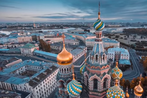 | 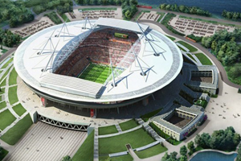 |
The second largest city in Russia. As of the 2017 Rosstat, the federal subject's population is 5,281,579 or 3.6% of the
total population of Russia.Situated on the Neva River, at the head of the Gulf of Finland on the Baltic Sea, it was founded by Tsar Peter the Great on May 27 1703.
Saint Petersburg is one of the modern cities of Russia, as well as its cultural capital. The Historic Centre of Saint Petersburg and Related Groups of Monuments
constitute a UNESCO World Heritage Site. Saint Petersburg Metro underground rapid transit system was opened in 1955; it now has 5 lines with 67 stations,
connecting all five railway terminals. Saint Petersburg has an extensive city-funded network of public transport (buses, trams, trolleybuses) and several hundred
routes served by marshrutkas.
| 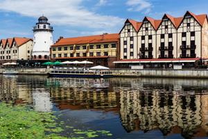 | 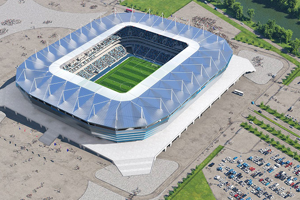 |
Is at the mouth of the navigable Pregolya River, which empties into the Vistula Lagoon, an inlet of the Baltic Sea.Kaliningrad was the East Prussian provincial
capital Königsberg. Founded in 1255 by the Teutonic Knights, the city was named in honor of the Bohemian King Ottokar II.It has an approximate population
of 448,548 inhabitants. The original transport system the Königsberg tramway it still functions to this day and the trolleybus system remains function today a big
bus lines complet the trnsportation system at the city.
| 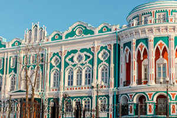 | 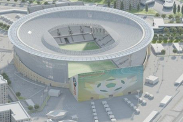 |
Was founded on November 18, 1723. Ekaterinburg's urban area is the fourth largest in Russia, as well as one of the three most
developed post-industrial urban areas of the country, is also the headquarters of the Central Military District. At the 2010 Census, it had a population of 1,349,772.
The EYMP "Yekaterinburg Metro", the EMLM "Tram-Trolleybus Office" and the EMPU "Municipal Association of Bus Enterprises" make a complete system of
transportation at this beautiful place.
| 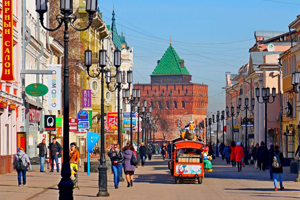 | 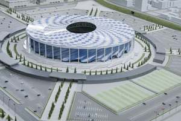 |
The city was founded in 1221 by Prince Yuri II of Vladimir. Is an important economic, transportation, scientific,educational and cultural center in Russia and
the vast Volga-Vyatka economic region, and is the main center of river tourism in Russia. Population: 1,250,619 inhabitants.
| 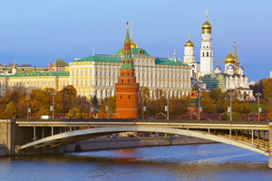 | 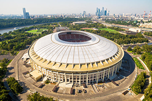 |
| 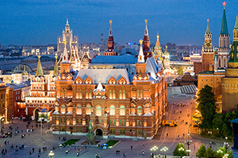 | 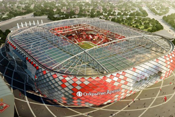 |
The capital and most populous city of Russia, with 12.2 million residents within the city limits and 17.1 million within the urban area. Moscow is recognized as
Russian federal city. By broader definitions Moscow is among the world's largest cities, being the 14th largestmetro area, the 18th largest agglomeration,
the 15th largest urban area, and the 11th largest by population within city limits worldwide. Metro, Railway, Trolleybus, Bus, Monorail, boat, and tram,
all those a great variety transport systems ivite you to know this espectacular city.
| 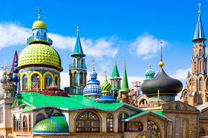 | 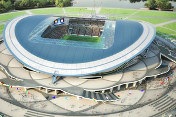 |
Is the capital and largest city of the Republic of Tatarstan, Russia. With a population of 1,143,535, it is
the sixth most populous city in Russia. Kazan lies at the confluence of the Volga and Kazanka Rivers in European Russia. The Kazan Kremlin is a World
Heritage Site. In April 2009, the Russian Patent Office granted Kazan the right to brand itself as the "Third Capital" of Russia. In 2009 it was chosen
as the "Sports capital of Russia" and it still is referred to as such. In 2015, Kazan was visited by 2.1 million tourists. The Kazan Kremlin was visited
by 1.5 million tourists in 2015, and the city's hotel and entertainment complex with an aquapark called "Kazan Riviera" is visited by 1 million tourists per year.
The transport in this city have different alternatives like Tram, Trolleybus, Metro and Bus system.
| 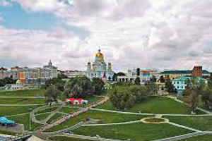 | 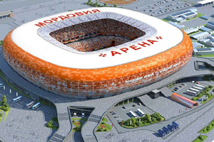 |
The capital city of the Republic of Mordovia, Russia, as well as its financial and economic center. It is located in the Volga basin at the confluence of the Saranka
and Insar Rivers, about 630 kilometers (390 mi) east of Moscow. Population: 297,415 inhabitants. Founded in 1641, took its name from a nearby Mordvin village.
The municipal transit system of Saransk consists primarily of a network of bus and trolleybus lines.
| 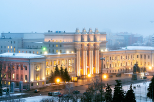 | 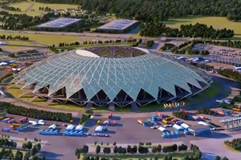 |
known from 1935 to 1991 as Kuybyshev, is the sixth largest city in Russia and the administrative center of Samara Oblast.
It is situated in the southeastern part of European Russia at the confluence of the Volga and Samara Rivers on the east bank of the Volga. The land within the
city boundaries covers 46,597 hectares (115,140 acres). Population: 1,164,685 inhabitants. Public transportation includes the Samara Metro, trams, municipal
and private bus lines, and trolleybuses. Local trains serve the suburbs.
| 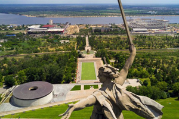 | 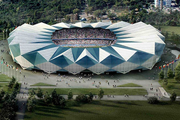 |
Is an important industrial city and the administrative center of Volgograd Oblast, Russia. It is 80 kilometers (50 mi) long, north to south and is situated on the
western bank of the Volga River, after which the city was named. Population: 1,021,215 inhabitants. Volgograd's public transport system includes a light rail
service known as the Volgograd metrotram. Local public transport is provided by buses, trolleybuses and trams.
| 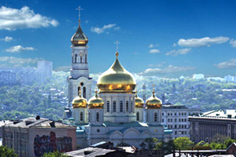 | 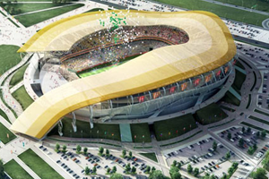 |
Is a port city and the administrative center of Rostov Oblast and the Southern Federal District of Russia. It lies in the southeastern part of the East European Plain
on the Don River, 32 kilometers (20 mi) from the Sea of Azov. The southwestern suburbs of the city abut the Don River delta. The population is 1,089,261 inhabitants.
Rostov-on-Don is a major transport center. Some refer to it as the "gateway to the Caucasus". Public transport in Rostov-on-Don includes buses, trolleybuses, trams,
and marshrutkas. The Rostov Metro is under development.
| 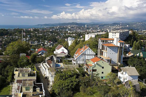 | 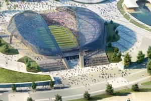 |
Is a city in Krasnodar Krai, Russia, located on the Black Sea coast near the border between Georgia/Abkhazia and Russia. The area of the city proper is 176.77 square
kilometers (68.25 sq mi). the city had a permanent population of 343,334 inhabitants. Public transport is represented mainly by bus and taxi. A kind of non-mass public
transport are also two funiculars, and three cable cars, also has several cableways in Krasnaya Polyana.